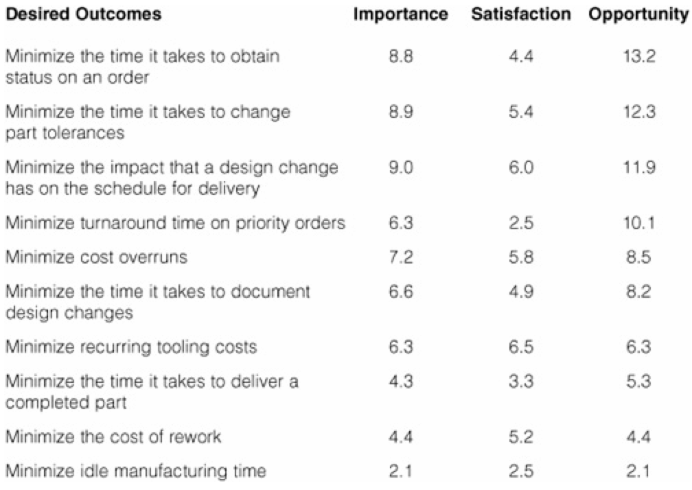

Marketing your future web-based product/service
by Fredrik Wollsén
@neamlabs
About me
- Personality type: ENTP
-
"the ENTP's primary interest in life is understanding the world that they live in"
- PRO: Rational, logical, curious, "uncompromisingly honest"
- CON: Not a hustler, not a sales rep, can't sell you this pen

- ... but may know something about value creation and marketing of web-based services
My life as a geek and consultant
- 1990 - 4 years old - Dad calls me at day-care from work after I the night before had changed password on his work-laptop
- 1995 - 9 years old - First programming language (BASIC)
- 1996 - 10 years old - First personal website (HTML)
- 2001 - 15 years old - Started building dynamic websites (PHP)
- 2002 - 16 years old - First website built for client
- 2004 - 18 years old - Started web/IT consultancy business
- 2005 to 2015 - 19-29 years old - Consulting, Studying, Traveling
"Much great clients! Such experience!"
Doge
April 2015
Me as a failed entrepreneur
- Since 2002
- Started six companies
- $850,000 investor money
- Creative, skilled teams
- Covered by TechCrunch, VentureBeat, GigaOM, Fast Company, VatorNews, Business Insider
- Thousands and thousands of hours in product/service development without pay
- Lots of insane work weeks
Great success?
Four companies shut down within 3 years of their initiation
&
One court-case between previous co-founders spanning several years
However, apply math and...
- Two companies are still alive!
Me as a somewhat successful entrepreneur
- Two companies are still alive!
- Happy, paying, returning customers!
- No media coverage (Not important!)
- Paid product/service development model
- Very few insane work weeks
- One of the companies in a high-growth market
- Enough time available to work on new web-based products/services
Marketing Part 1
Understanding growth as per "The Lean Startup" by Eric Ries
The 4 Ways Customers Drive Sustainable Growth
- 1. Word of Mouth
- 2. A Side Effect of Using the Product
- 3. Paid Advertising
- 4. Repeat Use
The Three Engines of Growth
- The Sticky Engine of Growth
- The Viral Engine of Growth
- The Paid Engine of Growth
Can you use more than one engine of growth?
- "Yes, but as a small business owner it’s much better to focus on one engine at a time"
Marketing Part 2
Don't focus on marketing
Seriously
Forget marketing, at least to begin with...
If you ask around...
How do I market my web-based product/service?
You will probably hear things like:
- "Create a search-based user acquisition strategy through content marketing and search engine optimization and marketing"
- "Embrace social media technologies and building a presence on platforms like Twitter and Facebook"
- "Use search to inform your product development roadmap"
- "Optimize your websites for user experience and conversions"
- "Use cost-effective methods of advertising through in-depth analysis of analytics and extensive A/B testing"
- etc...
You did that for months and not getting noticable results?
The problem might be...
Andy Johns of Wealthfront (formerly: Facebook, Twitter and Quora).
March 2014
Don't be offended
This is waaay to common
92% of startups fail
Ergo...
Marketing your future web-based product/service
=
100% Creating a kick-ass product/service that customers want
20% Develop customer relationships through exceptional customer support
20% Actual marketing
Note: Not actual statistics - just percentages that seem rights to me
Yes, 140% total seems about right
Thus, first...
Make sure you have a working business model
"There are tons of methods, tools and advice for this!"
Lean Startup, Validation Board, Lean Canvas, Business Model Canvas, SEMPORCES, Hacker/Hustler, KISS, Business Model Yacht, One-Page Lean Startup, "Get Out Of The Building", Scrum, Agile Software Development, Kanban, Retrospectives, Growth Hacking, etc
I'm an entrepreur!
But wait... You tried to actually apply a method in practice?
How did it go?
"Everything assumes that we already have a team, an office, seed money, a plan, a landing page, a pricing model, a clear product roadmap, a sales team ..."
The thing is...
While most advice will help you get through the "Prototype -> Growth -> Maturity" cycle...
Very little advice is generally available for those that have the opportunity to start from scratch
(Like you!)
How to start from scratch
A practical approach to create future products/services
Part 1 - Adopt outcome-driven innovation
- Understand what customers want
- Innovate a breakthrough product/service
- Communicate about your product/service based on what customers want
Part 2 - Get out of the building
- Validate what you think you know without writing a single line of code
- Build a prototype using low-cost prototyping methods and third-party services
NOT THE OTHER WAY AROUND!
It is tempting to believe that you already know what customers want, and that your idea is good enough to try out in the real world
Look at it this way...
Let's assume that most Silicon Valley based startups, their investors, advisors, mentors etc are actually not completely clueless
Let's assume that they are actually smart, creative people with lots of experience...
But still:
92% of startups fail
Then there is the difference in efforts
- Getting out of the building: 100-400 hours of unpaid work + $1000-25000 investment necessary
- vs
- Adopting outcome-driven innovation: 10-100 hours of unpaid work + $100-1000 investment necessary
Ergo...
Make sure the idea is revised and improved before actually being tested as a full-blown startup idea
"But lots of smart people are telling me to go for it!"
Be patient!
- Most often, advisors, incubators and investors will tell you to "go for it" or "get out of the building" and help you assemble a team even when the idea is premature!
- This may be practical for them, since their goal may be to "stimulate innovation" and fearing that their advisees will give up and look for employment instead, they rather see them trying out their ideas in a startup.
- Even many investors will invest in premature ideas for the fun of it, even when they suspect beforehand that the idea won't fly.
- Result: Extreme costs for you and society in lost opportunities
Premature ideas on the market
Again:
92% of startups fail
Got it? Let's continue :)
Part 1 - Adopt outcome-driven innovation
Traditional customer-driven evaluation methods and marketing:
problems, solutions, features, specs, needs, selling points, benefits, advantages, pros, cons, etc
Too many variables!
Traditional customer inputs
"faster," "easy-to-use," "reliable," "smart," "powerful," "durable," "cheaper," and "better"
Far too vague to have any meaningful value to designers and engineers!
"I wish there was a clean, systematic approach to creating breakthrough products/services!"
A CHALLENGER APPEARS
The outcome-driven approach to innovation
A hands-on systematic approach to devising breakthrough products/services
Again?
The outcome-driven approach to innovation
Thinking in the terms of a product's potential to get a job done and address the customer's desired outcomes
Again?
The outcome-driven approach to innovation
Innovation as a predictable process
First things first
Outcome-driven thinking revolves around six basic concepts
- Jobs
- Desired outcomes
- Constraints
- Market Importance
- Market Satisfaction
- Market Opportunities = Underserved desired outcomes
Jobs = A Key Factor to Growth
- In both new and established markets, customers (people and companies) have jobs that arise regularly and need to get done
- To get the job done, customers seek out helpful products and services.
- Functional jobs
- Emotional jobs (Social, Emotional)
- New jobs are created over time, old ones abandoned, but for the most time, jobs are constant over time
Desired outcomes = Metrics That Drive Innovation
- Customers want to get more jobs done, but they also want to be able to do specific tasks faster, better, or cheaper than they can currently.
- To define just what "faster" or "better" means, companies must be able to capture from customers the set of metrics—measures of value, if you will—that define how they want to get the job done and what it means to get the job done perfectly.
- These metrics are the customers' desired outcomes.
- For most jobs, even those that may seem somewhat trivial, there are typically 50 to 150 or more desired outcomes—not just a handful.
- Does not vary over time!
Constraints = Roadblocks to Success
- Besides getting more jobs done, or a specific job done better, customers also need help overcoming the constraints that prevent them from getting a job done altogether or under certain circumstances.
- These constraints are often physical, regulatory, or environmental in nature.
- Varies over time with new technologies/regulations opening up for new possible product/service launches!
Market Importance
- How important are the jobs, outcomes and constraints to customers?
- Defined as what percentage of customers assign the job/outcome/constraint either a 4 or a 5 on a scale to 1-5 in importance.
- Does not vary over time!
Market Satisfaction
- How satisfied are you with the degree to which the internal and/or third-party tools/products/services you use today enables you to get the job done?
- Varies over time as new products/services arrives to market!
Market Opportunities
- Underserved = Low Satisfaction
- Overserved = High Satisfaction
- Market Opportunity = Highly Important Underserved Outcome
The Opportunity Algorithm
Importance + max (Importance-Satisfaction,0)
= Opportunity
The best part...
It comes with instructions!
- No more wild guessing!
Example
Outcomes that customers use to measure how well a vendor executes the job of producing machined parts for new jet engine designs.
Given this - Let's look at a simple example...
Q: What is problematic with this kind of ideas?
"It is like [popular product/service] but better!"
The answer is ...
Improvements along already satisfied dimensions does NOT address an opportunity
Read the book!

"What customers want" by Anthony W. Ulwick
- Innovate a breakthrough product/service
- Communicate about your product/service based on what customers want
- Understand what kind of marketing you need
Part 2 - Get out of the building
Validate what you think you know
- Pitch - Make sure the solution would actually provide value by selling the concept to customers before building the product.
- Concierge - Personally deliver the service to customers to test how satisfied they are with your solution.
Build a prototype
Here are some low-cost prototyping methods and third-party services:
And Finally...
What I recommend today's students to do in order to become successful entrepreneurs
Step 1 out of 6
Read the following books:
- What Customers Want (Anthony W. Ulwick)
-
Lean Startup (Eric Ries) - Hooked: How to Build Habit-Forming Products (Nir Eval)

-
4-Hour Work Week (Timothy Ferriss)
Step 2 out of 6
Understand the difference between "ordinary happy people", millionaires and billionaires and choose wisely what you want to become
Step 3 out of 6
Adopt outcome-driven thinking
Step 4 out of 6
Gain experience by starting and failing with startups for 1-3 years (insane work weeks and minimum pay is recommended)
Step 5 out of 6
Realize that you did not adapt outcome-driven thinking 1-3 years ago
Step 6 out of 6
Adopt outcome-driven thinking and apply life experiences in your first successful startup
Useful life experiences
- Understand actual value (Price != Cost, ROI != Value)
- Understand who and where you are and what you want to achieve
- Understand which ones to listen to
- Understand scale, exponentiality
- Remove manual labor, think systems
- Understand systems of value creation
- Understand true cost of using a third party service
- Understand the true cost of doing anything out of the ordinary
- Understand cognitive burden
- Don't forget social and emotional jobs
- Understand that you everyone involved needs to get paid for every second of work
Start TODAY
Don't wait for your studies to be finished. Having multiple years of work experience when graduating is completely within reach as a student entrepreneur :)
Questions?
Thank you!
Want to build a kickass service/product or discuss an idea? Send an email to
fredrik AT neam.se